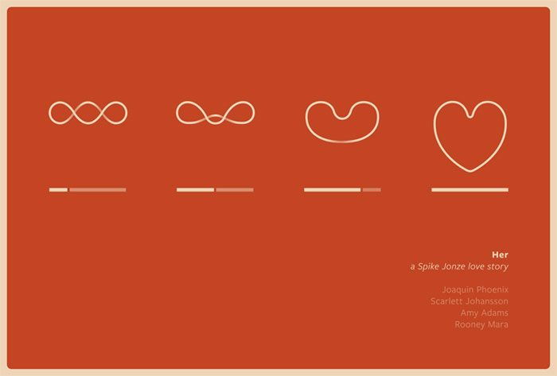

Building an AI Companion
Inspired by the movie “Her”, I’m building an AI companion with a beautiful 3D sphere interface and pure voice interaction. No words on screen - just visual conversation with AI.
🎯 Where I Am Now
Core Experience Working:
- ✅ 3D sphere that responds to conversation states
- ✅ Voice recognition and AI responses (Google Gemini)
- ✅ Smooth, meditation-like transitions
- ✅ Press spacebar to talk, AI responds naturally
🎨 The Visual Magic
The sphere morphs through four states:
- Idle: Gentle breathing, peaceful colors
- Listening: Green tones, focused attention
- Thinking: Blue contemplation, slow rotation
- Speaking: Warm amber, gentle waves
Recent Update: Made all animations super gentle and soothing - like meditation rather than sci-fi action.
🛠️ Tech Stack
- Frontend: TypeScript + Three.js + GSAP
- Voice: Web Speech API (browser native)
- AI: Google Gemini API
- Particles & Lighting: Custom WebGL effects
🎬 The Vision
Just like in “Her” - pure conversation with AI through beautiful visuals. No UI clutter, just you and the AI companion.

🚀 Next Steps
The core is working as expected. The app is still WIP - as soon as it’s ready I’ll share it here!